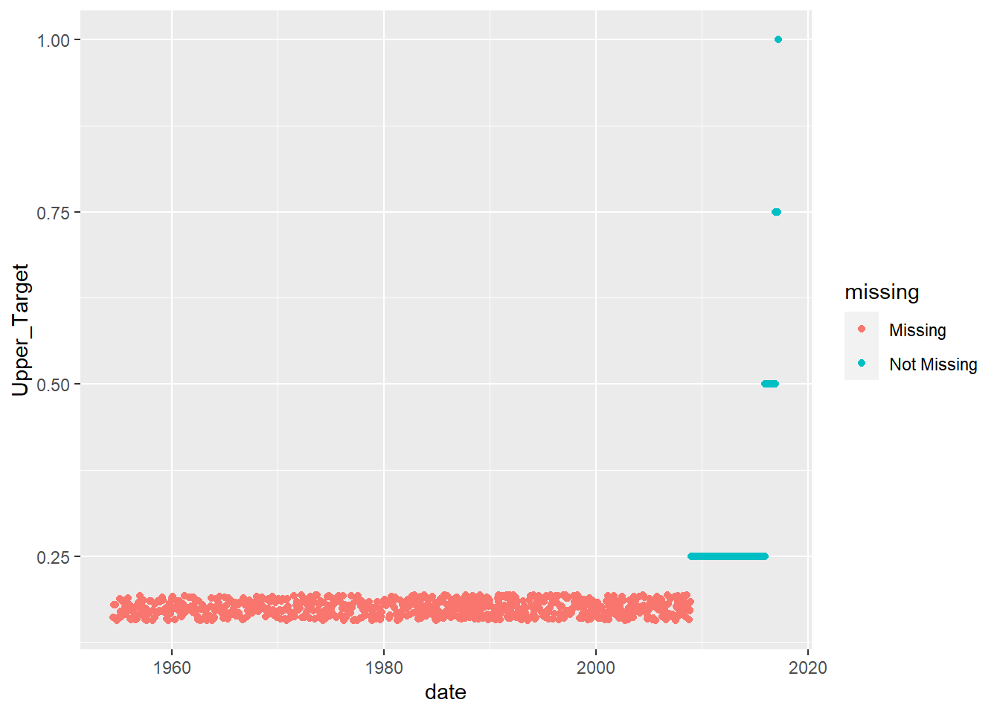

Code
library(tidyverse)
library(lubridate)
library(descr)
library(readr)
library(summarytools)
library(naniar)
library(ggplot2)
knitr::opts_chunk$set(echo = TRUE, warning=FALSE, message=FALSE)library(tidyverse)
library(lubridate)
library(descr)
library(readr)
library(summarytools)
library(naniar)
library(ggplot2)
knitr::opts_chunk$set(echo = TRUE, warning=FALSE, message=FALSE)mydata <- read.csv("_data/FedFundsRate.csv")
glimpse(mydata)Rows: 904
Columns: 10
$ Year <int> 1954, 1954, 1954, 1954, 1954, 1954, 1955,…
$ Month <int> 7, 8, 9, 10, 11, 12, 1, 2, 3, 4, 5, 6, 7,…
$ Day <int> 1, 1, 1, 1, 1, 1, 1, 1, 1, 1, 1, 1, 1, 1,…
$ Federal.Funds.Target.Rate <dbl> NA, NA, NA, NA, NA, NA, NA, NA, NA, NA, N…
$ Federal.Funds.Upper.Target <dbl> NA, NA, NA, NA, NA, NA, NA, NA, NA, NA, N…
$ Federal.Funds.Lower.Target <dbl> NA, NA, NA, NA, NA, NA, NA, NA, NA, NA, N…
$ Effective.Federal.Funds.Rate <dbl> 0.80, 1.22, 1.06, 0.85, 0.83, 1.28, 1.39,…
$ Real.GDP..Percent.Change. <dbl> 4.6, NA, NA, 8.0, NA, NA, 11.9, NA, NA, 6…
$ Unemployment.Rate <dbl> 5.8, 6.0, 6.1, 5.7, 5.3, 5.0, 4.9, 4.7, 4…
$ Inflation.Rate <dbl> NA, NA, NA, NA, NA, NA, NA, NA, NA, NA, N…print(summarytools::dfSummary(mydata,
varnumbers = FALSE,
plain.ascii = FALSE,
style = "grid",
graph.magnif = 0.70,
valid.col = FALSE),
method = 'render',
table.classes = 'table-condensed')| Variable | Stats / Values | Freqs (% of Valid) | Graph | Missing | ||||
|---|---|---|---|---|---|---|---|---|
| Year [integer] |
|
64 distinct values |  |
0 (0.0%) | ||||
| Month [integer] |
|
12 distinct values |  |
0 (0.0%) | ||||
| Day [integer] |
|
29 distinct values |  |
0 (0.0%) | ||||
| Federal.Funds.Target.Rate [numeric] |
|
63 distinct values |  |
442 (48.9%) | ||||
| Federal.Funds.Upper.Target [numeric] |
|
4 distinct values |  |
801 (88.6%) | ||||
| Federal.Funds.Lower.Target [numeric] |
|
4 distinct values |  |
801 (88.6%) | ||||
| Effective.Federal.Funds.Rate [numeric] |
|
466 distinct values |  |
152 (16.8%) | ||||
| Real.GDP..Percent.Change. [numeric] |
|
113 distinct values |  |
654 (72.3%) | ||||
| Unemployment.Rate [numeric] |
|
71 distinct values |  |
152 (16.8%) | ||||
| Inflation.Rate [numeric] |
|
106 distinct values |  |
194 (21.5%) |
Generated by summarytools 1.0.1 (R version 4.2.2)
2023-04-02
We have data on federal funds rates between 1954 and 2017. The variables include a target rate, as well as upper and lower targets. Along with that, it also contains effective rates which seem to be the actual prevailing rates at that point of time. We also have percentage change in GDP, unemployment and inflation.
After viewing the data, it can be seen that we need to combine the date into a single variable (from the year, month and day). I also select away the previous three variables of month year and day, and rename the other variables.
mydata2 <- mydata %>%
mutate (date=ymd(paste(Year, Month, Day, sep = "-")))%>%
select(date, everything())%>%
select(-Year,-Month,-Day)%>%
rename (Target_Rate = "Federal.Funds.Target.Rate", Upper_Target="Federal.Funds.Upper.Target", Lower_Target="Federal.Funds.Lower.Target", Effective_Rate="Effective.Federal.Funds.Rate", GDP_Percent_Change="Real.GDP..Percent.Change.", Unemployment_Rate="Unemployment.Rate", Inflation_Rate="Inflation.Rate")
glimpse(mydata2)Rows: 904
Columns: 8
$ date <date> 1954-07-01, 1954-08-01, 1954-09-01, 1954-10-01, 19…
$ Target_Rate <dbl> NA, NA, NA, NA, NA, NA, NA, NA, NA, NA, NA, NA, NA,…
$ Upper_Target <dbl> NA, NA, NA, NA, NA, NA, NA, NA, NA, NA, NA, NA, NA,…
$ Lower_Target <dbl> NA, NA, NA, NA, NA, NA, NA, NA, NA, NA, NA, NA, NA,…
$ Effective_Rate <dbl> 0.80, 1.22, 1.06, 0.85, 0.83, 1.28, 1.39, 1.29, 1.3…
$ GDP_Percent_Change <dbl> 4.6, NA, NA, 8.0, NA, NA, 11.9, NA, NA, 6.7, NA, NA…
$ Unemployment_Rate <dbl> 5.8, 6.0, 6.1, 5.7, 5.3, 5.0, 4.9, 4.7, 4.6, 4.7, 4…
$ Inflation_Rate <dbl> NA, NA, NA, NA, NA, NA, NA, NA, NA, NA, NA, NA, NA,…View(mydata2)It can be seen that the date variable has been appropriately created, and other variables are modified.
The data is already tidy, with ymd observations from 1954 to 2017.
The next task is to look at the missing values systematically.
df_missing <- mydata2 %>%
summarise_all(funs(n_miss = sum(is.na(.)), prop_miss = mean(is.na(.))))
glimpse(df_missing)Rows: 1
Columns: 16
$ date_n_miss <int> 0
$ Target_Rate_n_miss <int> 442
$ Upper_Target_n_miss <int> 801
$ Lower_Target_n_miss <int> 801
$ Effective_Rate_n_miss <int> 152
$ GDP_Percent_Change_n_miss <int> 654
$ Unemployment_Rate_n_miss <int> 152
$ Inflation_Rate_n_miss <int> 194
$ date_prop_miss <dbl> 0
$ Target_Rate_prop_miss <dbl> 0.4889381
$ Upper_Target_prop_miss <dbl> 0.8860619
$ Lower_Target_prop_miss <dbl> 0.8860619
$ Effective_Rate_prop_miss <dbl> 0.1681416
$ GDP_Percent_Change_prop_miss <dbl> 0.7234513
$ Unemployment_Rate_prop_miss <dbl> 0.1681416
$ Inflation_Rate_prop_miss <dbl> 0.2146018Here, we can see the proportion of missing values. I suspect that the missing values could be date specific.
ggplot(mydata2, aes(x = date, y = Target_Rate)) +
geom_miss_point()
ggplot(mydata2, aes(x = date, y = Upper_Target)) +
geom_miss_point()
ggplot(mydata2, aes(x = date, y = Lower_Target)) +
geom_miss_point()
We can see that the variable Target_Rate is completely missing before 1980’s and is also missing after late 2000s. It seems that upper and lower targets replace the Target_Rate variable.
Now, I first filter data from 1980, and also impute the missing values from the later part of the data where Target_Rate is missing, but lower and upper target rates are present.
mydata3 <- mydata2 %>%
filter(date> ymd("1982-09-01"))%>%
mutate (Imputed_Target_Rate = ifelse(is.na(Target_Rate), (Lower_Target + Upper_Target) / 2, Target_Rate))
glimpse(mydata3)Rows: 565
Columns: 9
$ date <date> 1982-09-27, 1982-10-01, 1982-10-07, 1982-11-01, 1…
$ Target_Rate <dbl> 10.2500, 10.0000, 9.5000, 9.5000, 9.0000, 9.0000, …
$ Upper_Target <dbl> NA, NA, NA, NA, NA, NA, NA, NA, NA, NA, NA, NA, NA…
$ Lower_Target <dbl> NA, NA, NA, NA, NA, NA, NA, NA, NA, NA, NA, NA, NA…
$ Effective_Rate <dbl> NA, 9.71, NA, 9.20, NA, 8.95, NA, 8.68, 8.51, 8.77…
$ GDP_Percent_Change <dbl> NA, 0.4, NA, NA, NA, NA, NA, 5.3, NA, NA, NA, 9.4,…
$ Unemployment_Rate <dbl> NA, 10.4, NA, 10.8, NA, 10.8, NA, 10.4, 10.4, 10.3…
$ Inflation_Rate <dbl> NA, 5.9, NA, 5.3, NA, 4.5, NA, 4.7, 4.7, 4.7, NA, …
$ Imputed_Target_Rate <dbl> 10.2500, 10.0000, 9.5000, 9.5000, 9.0000, 9.0000, …We can now see that the effective rate and the target rate usually move together, and that pattern is retained even after imputation. I this imputation, I have imputed the missing target rates, with the averages of lower and upper targets.
mydata4 <- mydata3 %>%
gather(variable, value, Imputed_Target_Rate, Effective_Rate)
ggplot(mydata4, aes(x = date, y = value, color = variable)) +
geom_line()
We could moreover, impute the missing values of GDP_percent_change, Unemployment_rate, and Inflation_rate by the annual averages:
mydata5 <- mydata3 %>%
group_by(year = lubridate::year(date)) %>%
mutate(GDP_Percent_Change_imputed = ifelse(is.na(GDP_Percent_Change), mean(GDP_Percent_Change, na.rm = TRUE), GDP_Percent_Change)) %>%
mutate(Unemployment_Rate_imputed = ifelse(is.na(Unemployment_Rate), mean(Unemployment_Rate, na.rm = TRUE), Unemployment_Rate)) %>%
mutate(Inflation_Rate_imputed = ifelse(is.na(Inflation_Rate), mean(Inflation_Rate, na.rm = TRUE), Inflation_Rate)) %>%
ungroup()
mydata6 <- mydata5 %>%
select(date, Imputed_Target_Rate, Effective_Rate, GDP_Percent_Change_imputed, Unemployment_Rate_imputed, Inflation_Rate_imputed)
glimpse(mydata6)Rows: 565
Columns: 6
$ date <date> 1982-09-27, 1982-10-01, 1982-10-07, 1982-1…
$ Imputed_Target_Rate <dbl> 10.2500, 10.0000, 9.5000, 9.5000, 9.0000, 9…
$ Effective_Rate <dbl> NA, 9.71, NA, 9.20, NA, 8.95, NA, 8.68, 8.5…
$ GDP_Percent_Change_imputed <dbl> 0.400, 0.400, 0.400, 0.400, 0.400, 0.400, 0…
$ Unemployment_Rate_imputed <dbl> 10.66667, 10.40000, 10.66667, 10.80000, 10.…
$ Inflation_Rate_imputed <dbl> 5.233333, 5.900000, 5.233333, 5.300000, 5.2…This is how the final dataset looks like after imputations.